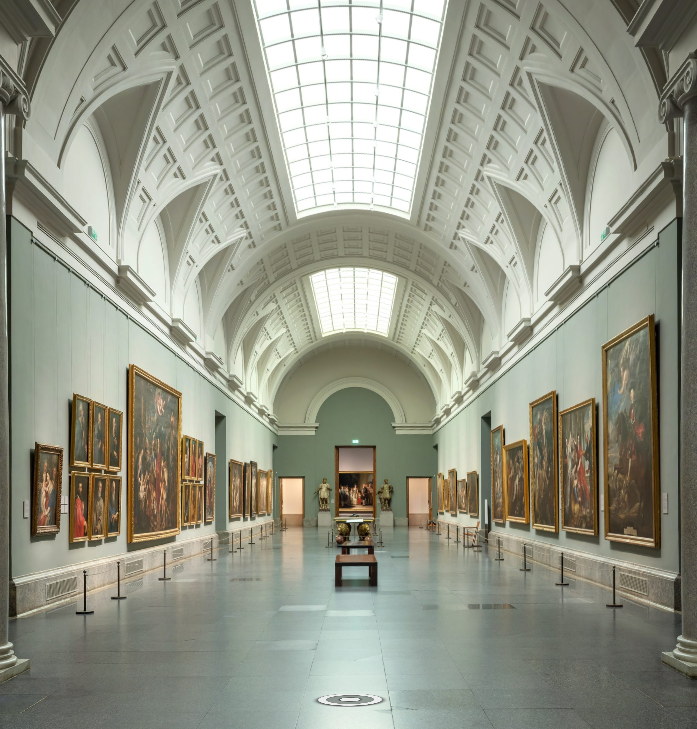

Cambios que haría en la Pagina de Kinal
Mejoraría la estructuración y la organización general de la plataforma.
- No tener que bajar mucho
- Muchas personas al momento de ingresar piensan que solo eso es la pagina pero no es asi tienen que bajar para poder ver el contenido asi tipo como trifoliar
- Poner la vision y Mision ya que vi que la pagina de Kinal no tiene eso y en una empresa es importante en su pagina principal la Vision y Mision
- Hay algunos lugares por ejemplo en museos tienen un recorrido virtual y en Kinal seria genial que pusieran un recorrido Virtual y asi se quita donde estan la galeria de imagenes (esto se haria cuando no haya Alumnos en el colegio) 